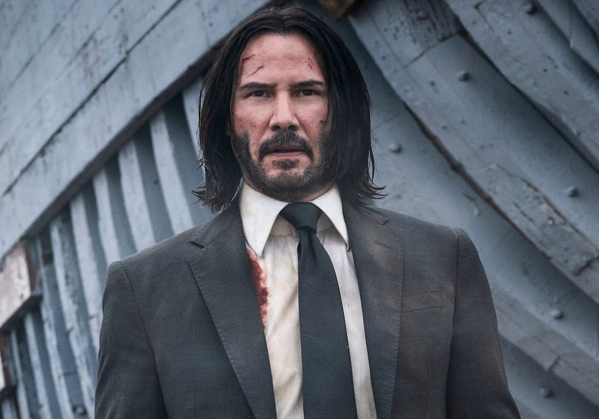

Франшиза Чада Стахелські могла отримати зовсім іншу назву, якщо б не виконавець головної ролі Кіану Рівз.
Як розповів сценарист картини Дерек Колстад Comic Book, спочатку першу частину хотіли назвати Scorn (Ненависть). Однак Кіану Рівз так часто називав проект ім'ям кілера, що Lionsgate вирішила перейменувати стрічку.
"Єдина причина, чому він називається "Джон Вік", полягає в тому, що Кіану продовжував саме так називати фільм. У плані маркетингу все звучало так: "Чуваче, це безкоштовна реклама вже на 4-5 млн дол. Тому тепер це "Джон Вік", - зазначив Колстад.
За словами Колстада, тепер він не може представити фільм з назвою Scorn і зміна назви пішла проекту на користь, оскільки в світі бойовиків краще заходять проекти з іменами героїв у назві.
Нагадаємо, що зйомки четвертої частини серії було відкладено через коронавірус. Через це прем'єру "Джона Віка" перенесли на рік - фільм вийде не раніше травня 2022 року.